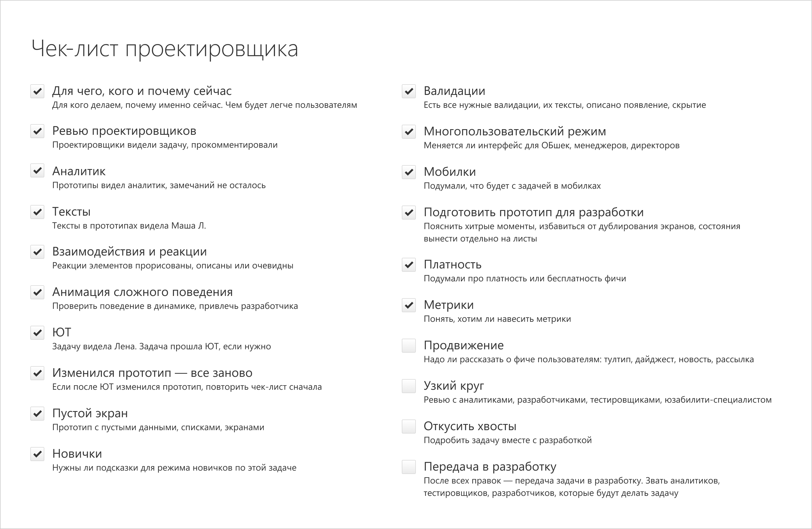

1. Начинающему проектировщику
Что мы ценим и ожидаем
Много полезного для дизайнеров написано в гайде по проектировщику, а еще в модели развития дизайнера. Я хочу остановиться на самых важных навыках, которые пригодятся прямо на старте.
Умение общаться и рассказывать свои решения
Этот навык нужен с самого первого дня, когда проектировщик начинает получать горы информации. Кому и на какие темы задавать вопросы я напишу в отдельной заметке.
Мы ожидаем, что дизайнер будет объяснять и отстаивать свою точку зрения. Для команды важно понимать, почему надо делать именно так, а не иначе. Команда болеет за продукт, хочет, чтобы он получился хорошим. Никому не хочется делать фигню. Именно поэтому ребята задают вопросы — это нормально.
Не думай, что твои решения критикуют или задают вопросы, потому что ставят под сомнение твой профессионализм. Вопросы — это способ понять твое решение, а предложение альтернативных вариантов от ребят — способ помочь тебе решить задачу. Чем раньше ты это осознаешь, тем быстрее беседы перетекут в конструктивное русло. Ты поймешь, почему твое решение не годится и придумаешь новое. Ты ощутишь поддержку, а не препятствия.
Бывают ситуации, когда в команде не налажено общение с проектировщиком, и может быть есть ребята, которые не видят в проектировщике пользы. Такие ситуации надо разбирать отдельно. Здесь я пишу о нормальных здоровых отношениях в команде, когда все участники понимают роли друг друга, считаются с мнением коллег, хотят решить задачу минимальными усилиями. В случае сложностей дизайнеру стоит сообщить об этом своему наставнику. Не всегда дизайнер может переменить ситуацию в проекте, ему нужна помощь.
Уметь слушать и понимать другие точки зрения тоже важно. Без этого ты можешь многое упустить. Не ленись слушать ребят до конца, даже если ты понимаешь, что тебе хотят сказать. Людям важно понимать, что их выслушали и поняли — сделай это.
Ну, и конечно, надо уметь договариваться. Задача не решена, пока все не сошлись на одном решении. Нехорошо, когда кто-то говорит «я не согласен, но делайте, что хотите». Стоит обсудить возражения, понять, почему человек сопротивляется. Возможно ты что-то не учел. Это важно для будущих отношений с ребятами. Как только ты начнешь делать «что хочешь», так сразу доверие к тебе будет утеряно. Восстанавливать его будет сложно. Когда ты не считаешься с кем-то, этот кто-то потом тоже не будет считаться с тобой.
Критическое мышление
Оно позволяет докапываться до сути и решать задачи более качественно. Дизайнер должен быть жаден до мелочей. Конечно, во всем нужна мера. Идеальный интерфейс можно рисовать всю жизнь. Задача дизайнера предложить решение хорошего качества в разумные сроки. Нормально, если дизайнеру не нравится, как он решил старую задачу. Это позволяет ему расти, предлагать лучшие решения в будущем.
Не ленись придираться к своим решениям, но будь аккуратен, когда придираешься к чужой работе — не забывай про конструктив.
Здоровое отношение к критике
Твои решения будут критиковать. Просто смирись, это нормально. Нет ничего стыдного показать свою работу с ошибками. Это всего лишь задача, ты учишься, ничего особенного в этом нет. Мы учимся всю жизнь через неудачи. Никто не ожидает от новичка супер-интерфейсов. Не тревожься из-за количества стремных моментов. Просто слушай, что тебе говорят, пытайся понять почему, пытайся уложить это в свой опыт. Задеть за живое никто не хочет. Не бойся показывать свои работы и не избегай критики. Только так ты сможешь расти — это важно.
Критикуй чужие работы аккуратно, без эмоций. Скажи, что было бы лучше и почему.
Неравнодушие
Не проходи мимо фигни. Если видишь что-то неправильное — скажи. И предложи возможное решение. Это касается как интерфейсов, так и общения, процессов. Если что-то можно изменить к лучшему, мы это меняем.
Будь готов, что по поводу фигни придут и к тебе :) Если ты плохо сделал задачку — это повод ее переделать, а не расстраиваться. Ошибаются все. Ребята не хотят задеть тебя лично, они просто не хотят фигни.
Самостоятельность
Хорошо, если ты можешь сориентироваться, с чего начать, кому задать вопросы по задаче, как построить свою работу. Если с этим возникают сложности — обращайся к руководителю своей дизайн-группы, он сориентирует, расскажет о лучших практиках, о том, как решают задачи другие дизайнеры, чем они пользуются, как устроены процессы.
Помни, что помощь есть всегда. Нормально часто дергать наставника в первые несколько месяцев — это его работа. Но не злоупотребляй этим в долгой перспективе. Учись решать вопросы самостоятельно.
План решения задачи
В идеале ты должен представлять себе алгоритм решения задачи. В Эльбе мы используем чек-листы, чтобы ничего не упустить в процессе решения.
Ты можешь составить подобный для себя с учетом особенностей твоего проекта. Наш чек-лист периодически дополняется новыми пунктами.
Про то, как дизайнеры решают задачи, тебе может рассказать наставник. Со временем ты поймешь, как устроен процесс в вашей команде, и не будешь теряться, когда к тебе придет новая задача.
Многообразие решений
Видеть разные варианты решения одной задачи — хорошо. При этом надо понимать, чем одно лучше или хуже другого. Выбирать лучшее и отстаивать его. Почему не стоит давать команде выбирать решение из всего многообразия, я расскажу отдельно.
Выводы
Новому проектировщику надо прокачивать не только навыки проектирования, но и навыки общения. Софтскилы прокачивать больно и сложно, но необходимо. Часто у новичков с ними куда больше проблем, чем с плохим дизайном.
В следующей статье читай о том, что и у кого можно спрашивать, когда решаешь задачу.